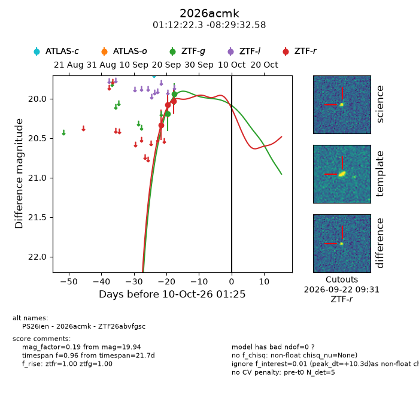
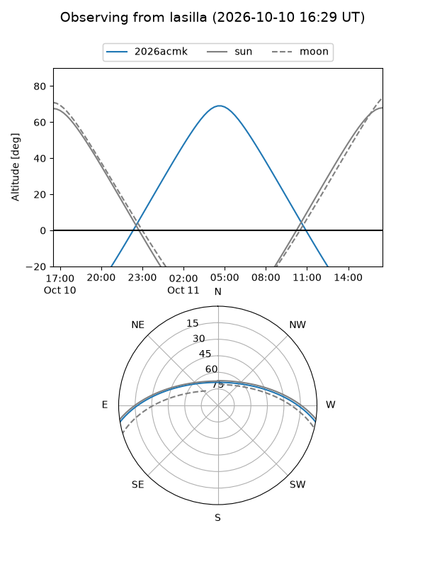
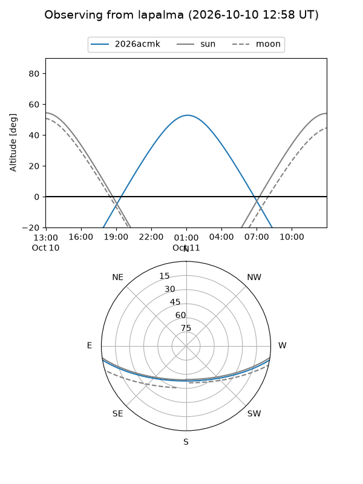
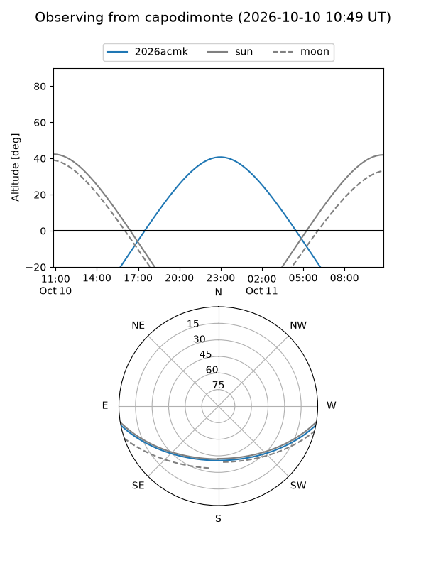
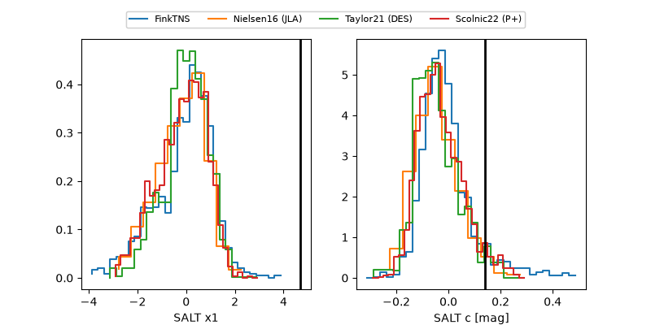

2026acmk
Target 2026acmk at 2026-10-10 13:26
Aliases and brokers:
FINK-ZTF: ztf.fink-portal.org/ZTF26abvfgsc
Lasair-ZTF: lasair-ztf.lsst.ac.uk/objects/ZTF26abvfgsc
ALeRCE-ZTF: alerce.online/object/ZTF26abvfgsc
YSE-PZ: ziggy.ucolick.org/yse/transient_detail/2026acmk
TNS name: wis-tns.org/object/2026acmk
Direct TNS query: direct search
alt names
ZTF26abvfgsc (ztf,fink_ztf)
2026acmk (tns,yse)
PS26ien (panstarrs)
Coordinates:
equatorial (ra, dec) = 18.0928,-8.49238
equatorial (HMS+DMS) = 01:12:22.27,-08:29:32.58
galactic (l, b) = (138.7852,-70.71706)
Flags:
peak dt: +10.8
Photometry:
last ztfg=19.94, ztfr=20.04
2 ztfg, 3 ztfr detections
Lightcurve

Visibility



Additional plots
